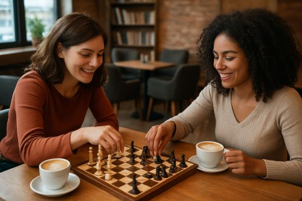

Understanding Chess Elo Ratings
The Elo rating system measures a player's skill level. As you improve at chess—learning openings, tactics,
strategy, and endgames—your rating increases. Below, you'll find a breakdown of the major ranking stages,
along with practical suggestions to help you move to the next level.
Chess Levels and How to Improve

The Chess Lounge has a playful match.
Beginner (100 – 800)
At this stage, players are still learning the rules, basic tactics, and simple openings.
How to Improve
Learn basic tactics such as forks, pins, and skewers.
Focus on opening principles instead of memorizing theory.
Play longer games to practice slow, accurate thinking.
Review your mistakes after each match.
Visit Studies Page for openings and basic tactics.
Intermediate (800 – 1300)
Players understand the rules and basic tactics but struggle with strategy and piece coordination.
How to Improve
Learn common opening structures instead of individual moves.
Understand basic middle game ideas such as doubling rooks and attacking weaknesses.
Practice endgames like king and pawn vs king.
Solve at least 10 chess puzzles per day.
Study Middle Game Concepts to advance to the next level.
Advanced (1300 – 1600)
Players begin to execute plans, understand pawn structure, and coordinate piece activity.
How to Improve
Study typical pawn structures such as isolated pawns and pawn chains.
Learn advanced tactical patterns and combinations.
Analyze your games more deeply, not just the final mistake.
Follow one opening for white and one for black consistently.
Explore Tactics and Endgames to sharpen your play.
Tournament Player (1600 – 2000)
Players in this range understand deeper strategy, positional play, and long-term planning.
How to Improve
Analyze grandmaster games to understand strategic ideas.
Memorize key endgame positions such as Lucena and Philidor.
Study typical middle game plans for your preferred openings.
Reduce tactical blunders by solving higher-difficulty puzzles.
Strengthen Middle Game Strategy to push toward Expert level.
Master Level (2000+)
At this stage, players demonstrate a deep understanding of theory, patterns, intuition, and precision.
How to Improve
Specialize in a few openings and learn their advanced ideas deeply.
Analyze your games without a computer first to improve independent thinking.
Study endgames extensively—especially rook endings.
Read advanced chess books on strategy, calculation, and technique.
Study Advanced Concepts to refine your approach.
General Improvement Tips
Regardless of your Elo rating, consistent habits will help you improve much faster.
Universal Skills for All Levels
Habit
Why It Helps
Analyze your losses
You learn more from mistakes than from victories.
Practice tactics daily
Tactics are the quickest way to gain rating points.
Study one opening at a time
Consistency builds familiarity and deeper skill.
Play longer games
Longer time controls reinforce correct thinking habits.
Did You Know?
Most players under 1600 lose games due to simple tactical mistakes—not strategy.